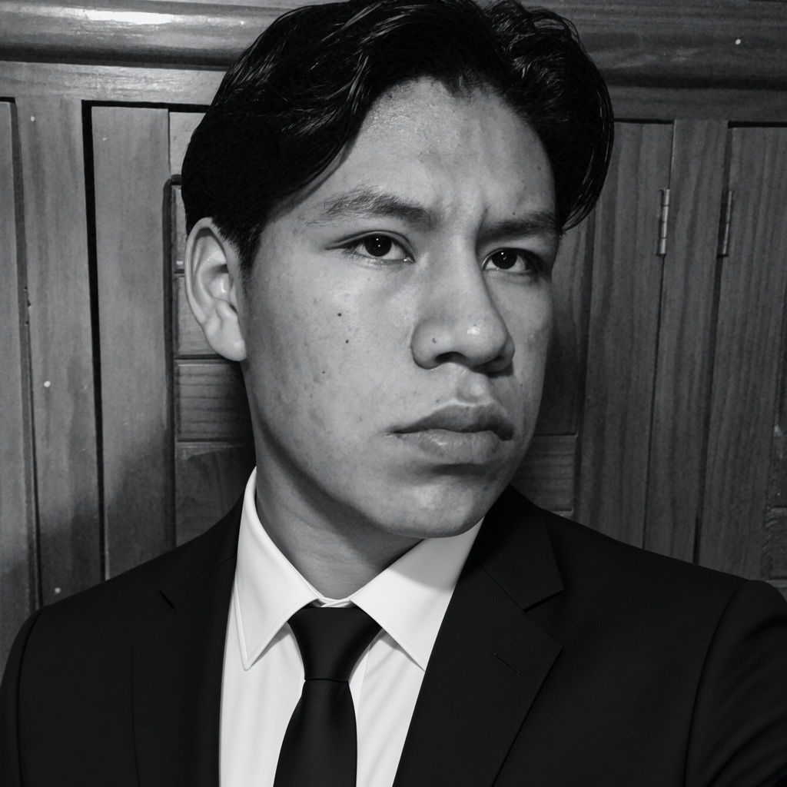

Software a la medida
Aplicaciones y bases de datos que ordenan tu operación y evitan errores de captura. Java, Python y SQL.
Técnico en mecatrónica e ingeniero en software. Convierto procesos manuales en sistemas confiables que ahorran tiempo y reducen errores en tu empresa.

Aplicaciones y bases de datos que ordenan tu operación y evitan errores de captura. Java, Python y SQL.
Sistemas con Arduino y PIC que automatizan tareas repetitivas y reducen tiempos de operación.
Diseño CAD, PCB y prototipos CNC para validar tu idea antes de invertir en producción.
Una llamada o un correo para entender qué necesitas.
Alcance, plazo y entregables definidos antes de empezar.
Solución probada, documentada y lista para usar.
Soy técnico en mecatrónica e ingeniero en software. Combino programación, electrónica y automatización para entregar soluciones funcionales, documentadas y fáciles de mantener.
Enfoque: código limpio, documentación técnica, aprendizaje continuo y trabajo en equipo.
Java, Python, SQL, POO, interfaces de escritorio y modelado de datos.
Arduino, sensores, drivers, motores paso a paso, prototipos y sistemas embebidos.
Lo que aporto al equipo, además de lo técnico.
Busco acuerdos que mantengan al equipo avanzando.
Organizo tareas, prioridades y responsables para cumplir los plazos.
Explico temas técnicos en un lenguaje que gerencia y clientes entienden.
Guío al equipo con el ejemplo y con objetivos claros.
Divido problemas complejos en pasos concretos.
Me ajusto rápido a nuevas herramientas y cambios de prioridad.
Planeo plazos realistas y doy seguimiento constante.
Colaboro entre áreas técnicas y de negocio.
Base sólida en electrónica, automatización y prototipado.
Desarrollo con Java, Python y bases de datos, integrado con sistemas embebidos.
Inglés técnico: lectura de documentación y recursos de programación.
Desarrollo iterativo, documentación clara, control de versiones con Git y atención a la calidad del software y la integración hardware/software.
Ejemplos del tipo de soluciones que puedo construir para tu empresa. Filtra por área o tecnología.
Las estadísticas se consultan desde GitHub; pueden tardar en cargar o no mostrarse si el servicio externo está limitado.
CORREO: School.emilioblas@gmail.com
Escanea el código para guardar mi nombre y correo en tus contactos.
Shuha Emilio Blas Santos
School.emilioblas@gmail.com
Déjame un mensaje y te responderé por correo.